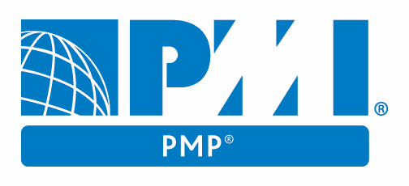
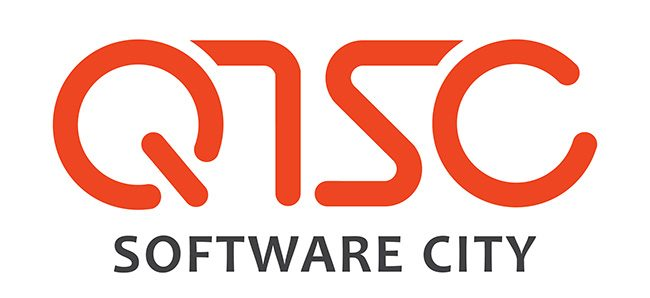
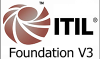

HOME & CV
CONTACT
- e-mail: anhtuan.upmc (at) gmail.com
- office address: Floor 1, Orient Building, 331 Ben Van Don, District 4, HCMC. Vietnam.
- curriculum vitae :
- CV in English (1 page) (pdf)
- CV in Vietnamese (1 page) (pdf)
EDUCATION
(in reverse chronological order)
-
Master degree in sciences, networking
(in English, still in course. Expected to finish in 2018),
University of Paris VI
(web link),
2016 - 2018.
-
Bachelor degree in sciences, computing
(in English),
University of Greenwich
(web link),
Ho Chi Minh City, Vietnam, 2014.

-
Bachelor degree in sciences, computer science
(in English),
HCMC University of Science
(web link),
Ho Chi Minh City, Vietnam, 2008.
OTHER CERTIFICATES
-
PMP
(in English),
University of Soongsil
(web link),
Ho Chi Minh City, Vietnam, 2013.


-
Information Technology Infrastructure Library (ITIL version 3), IT Service Management - SaigonCTT
(in English), HCMC RMIT University, Vietnam, 2011.
(web link),


-
VMware Data Center Virtualization Fundamentals,
(in English), Ho Chi Minh City, Vietnam, 2013.
(pdf),
-
Discover VMware vSphere, @ University of Science
(in English), Ho Chi Minh City, Vietnam, 2013.
(pdf),
-
Some other online courses @ edX
(in English), Ho Chi Minh City, Vietnam, 2014 - Present.
(web link),
- Robotics,
- Artificial Intelligence (AI),
- Machine Learning,
- How Virtual Reality Works,
- Developing Intelligent Apps and Bots,
- Philosophy and Critical Thinking,
- Statistical Thinking for Data Science and Analytics.
SKILLS
-
With more than 10 years experience in ICT industry (2007 - 2017), I have learned many skills to support my job effectively.
- Leadership & training,
- Complex problem solving,
- Critical Thinking,
- Service Orientation,
- Time Management,
- Management of Personnel Resources,
- Material Resources,
- Operation and Control,
- Quality Control Analysis.
AWARD
- Master degree scholarship of University of Greenwich (2011),
ACTIVITIES
- Member of a Robocon team (National Robocon Contest 2006),
- Volunteer of Olympic National Informatics Student Contest 2005.
 English
English Français
Français Tiếng Việt
Tiếng Việt